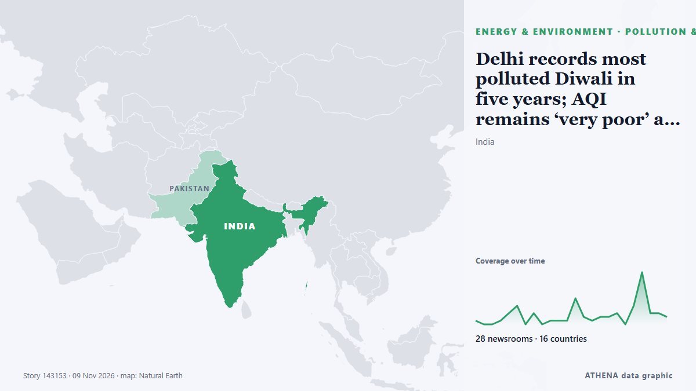

Delhi records most polluted Diwali in five years; AQI remains ‘very poor’ a day after

India orders schools in and around Delhi to offer online classes, encourages people to work from home ahead of Diwali. de Express Tribune
Relayé de façon indépendante par 28 médias dans 16 pays depuis le 6 nov. ; premier à l'annoncer : Scroll.in ; la couverture est à son pic. ATHENA juge le risque accru (4.0/10), surtout en raison de la gravité des dommages décrits et de sa portée géographique et sectorielle. La confiance est de 89 % (élevée) : 28 médias indépendants le confirment, avec une fiabilité moyenne des sources de 72 %. Médias par pays : Inde (31), Malaisie (2), Pakistan (1). Couverture : du 6 nov. au 9 nov., 61 heures.
Pourquoi c'est important: Les évolutions de l'énergie et des ressources pèsent sur les prix des carburants et de l'électricité, la sécurité d'approvisionnement et les engagements climatiques.
Ce qui a changé : 34 nouveaux articles de 20 rédactions dans les 24 heures jusqu'au 9 nov..
Premier titre : Delhi: GRAP-3 curbs imposed as 26 monitoring stations record ‘severe’ air quality
Les titres sont affichés en anglais, tels que publiés.
Comment lire cette page
- Ce que vous lisez
- 28 médias dans 16 pays ont rapporté cet événement. Les reportages ci-dessous sont classés selon leur ordre de parution ; chaque titre ouvre l'article original. ATHENA n'écrit aucun reportage.
- Notre lecture
- Pour mémoire — Les reportages décrivent une affaire terminée, intérieure, commerciale ou personnelle. Nous la consignons pour que vous voyiez qui l'a rapportée et quand. Nous ne suivons pas ici de risque de conflit plus large.
- Quelle base de preuves
- Correcte Plusieurs médias indépendants concordent, mais le tableau peut encore changer.
Après retrait des doublons, des éléments hors sujet et périmés, 15 des 40 reportages listés sont retenus ; 100 % des titres correspondent à l'événement.
- Ce que cela ne veut pas dire
- ATHENA mesure la façon dont un événement est rapporté, pas sa véracité. Ce n'est ni une prévision, ni un jugement sur qui a raison, ni un conseil.
- Ce qui la changerait
- Des reportages d'autres médias indépendants montrant une évolution différente, ou une confirmation ou un démenti ferme d'une source officielle.
Lecture R2 · actualisée à chaque mise à jour de cette page. ATHENA n'a pas encore publié de bilan de ces lectures ; il sera lié ici le moment venu.
En un coup d'œil
Sélectionné, noté et rédigé par la méthodologie publiée d'ATHENA. Aucun rédacteur n'intervient sur un événement en particulier. Comment il est produit ›
| 06 Nov 14:31 UTC | 1 |
|---|---|
| 06 Nov 17:31 UTC | 0 |
| 06 Nov 20:31 UTC | 0 |
| 06 Nov 23:31 UTC | 1 |
| 07 Nov 02:31 UTC | 3 |
| 07 Nov 05:31 UTC | 5 |
| 07 Nov 08:31 UTC | 0 |
| 07 Nov 11:31 UTC | 3 |
| 07 Nov 14:31 UTC | 0 |
| 07 Nov 17:31 UTC | 1 |
| 07 Nov 20:31 UTC | 1 |
| 07 Nov 23:31 UTC | 1 |
| 08 Nov 02:31 UTC | 7 |
| 08 Nov 05:31 UTC | 2 |
| 08 Nov 08:31 UTC | 1 |
| 08 Nov 11:31 UTC | 2 |
| 08 Nov 14:31 UTC | 2 |
| 08 Nov 17:31 UTC | 3 |
| 08 Nov 20:31 UTC | 0 |
| 08 Nov 23:31 UTC | 5 |
| 09 Nov 02:31 UTC | 14 |
| 09 Nov 05:31 UTC | 3 |
| 09 Nov 08:31 UTC | 3 |
| 09 Nov 11:31 UTC | 2 |
| 06 Nov 16:51 UTC | 0.0 |
|---|---|
| 07 Nov 06:35 UTC | 0.8 |
| 07 Nov 14:13 UTC | 2.0 |
| 08 Nov 04:53 UTC | 2.8 |
| 09 Nov 05:26 UTC | 4.2 |
| 09 Nov 11:31 UTC | 3.5 |
| 09 Nov 13:36 UTC | 4.0 |
| 09 Nov 13:36 UTC | 4.0 |
Pourquoi ces chiffres
Importance
Risque
Confiance
La couverture : qui l'a annoncé, et quand
titre tel que publié · ouvre l'original- Scroll.in · IndeDelhi: GRAP-3 curbs imposed as 26 monitoring stations record ‘severe’ air quality
- Express Tribune · PakistanDelhi world's most polluted major city on eve of Diwali, Swiss group says
- Oman Observer · OmanDelhi world's most polluted major city on eve of Diwali: IQAir
- Hindustan Times · IndeIIT to Rohini: 10 most polluted areas in Delhi amid ‘very poor’ AQI on Diwali eve
- NDTV · IndeDelhi Air 'Very Poor', 'Severe' In Several Areas Day Before Diwali
- Arab News · Arabie saouditeDelhi world’s most polluted major city on eve of Diwali, Swiss group says
- Free Malaysia Today · MalaisieDelhi world’s most polluted major city on eve of Diwali
- Indian Express · IndeSmog blankets Delhi as AQI remains ‘very poor’; heavy rain forecast in Kerala, Tamil Nadu
- Deccan Herald · IndeDelhi world’s most polluted major city on eve of Diwali, Swiss group says
- Bangkok Post — page reader · ThaïlandeDelhi tops global pollution table on eve of Diwali
- New Straits Times · MalaisieDelhi world's most polluted major city on eve of Diwali, Swiss group says
- NDTV · IndeDelhi Air Remains 'Very Poor' On Diwali Eve, Likely To Worsen Tomorrow
- Deccan Herald · IndeDelhi records 369 AQI on Diwali eve; readings in several areas cross 400
- NDTV · IndeWhy Week After Diwali Will Be Delhi's Biggest Pollution Test
- Times of India · IndeDelhi father praises daughter's move to Finland amid city's worsening pollution
- Hindustan Times · IndeDelhi breathes worst air on Diwali eve in 10 years
- Livemint · IndeGRAP 3 vehicle rules in Delhi: With AQI turning severe on Diwali, here is what is allowed and what is banned on roads
- Scroll.in · IndeDelhi air quality remains ‘very poor’ on Diwali morning, several areas record ‘severe’ AQI
- Hindustan Times · IndeHT Morning News Brief November 8: Delhi’s worst Diwali eve air in 10 years; Israel Prez picks Netanyahu rival Eisenkot, and more
- Business Standard · IndeDelhi air remains very poor on Diwali, several stations record severe AQI
- Hindustan Times · IndeDiwali eve crackers leave Delhi under a toxic haze, air quality nears ‘severe’
- The New York Times (World) · États-UnisPolluted Delhi Tries ‘Green’ Fireworks to Clear the Air at Diwali
- The Hindu · IndeDelhi records ‘very poor’ air quality on Diwali with 376 AQI
- NDTV · IndeDelhi Pollution Worsens On Diwali, Air Quality 'Severe' In Many Areas
- DW English · AllemagneIndia: Delhi chokes on most polluted Diwali eve in 10 years
- Indian Express · IndeAt 131, Mumbai’s AQI on Diwali afternoon was its lowest in four years. But the air still isn’t clean
- Hindustan Times · IndeDelhi’s air quality ‘very poor’ on Diwali, expected to worsen
- NDTV · IndeDelhi Air Quality Turns 'Very Poor' On Diwali, To Turn 'Severe'
- Deccan Herald · IndeDelhi records 'very poor' air quality on Diwali with 376 AQI
- Indian Express · IndeDelhi AQI ‘very poor’ on Diwali, to turn ‘severe’ as celebrations gather pace
- The Hindu · IndeThick smog blankets Delhi on Deepavali night, AQI at 20 stations ‘severe’
- NDTV · IndeDelhi-NCR Chokes On Diwali Night As Smoke Engulfs City, AQI Nears 400
- The Hindu · IndeAir pollution over 66 times WHO limit in parts of Delhi as people defy ban on firecrackers on Deepavali
- Hindustan Times · IndeDelhi's air quality ‘very poor’ morning after Diwali, capital chokes with AQI at 376
- Times of India · IndeDelhi's air quality slips into 'severe' category on Diwali; Mumbai's AQI at 170
- Indian Express · IndeDelhi wakes up to toxic post-Diwali air, 8 stations in ‘Severe’ zone
- Livemint · IndeDelhi AQI crosses 400 on Diwali: Firecrackers push air quality into ‘severe’ zone as thick smog blankets city
- NDTV · IndeWhy Delhi's Major Air Quality Stations Stopped Showing Data On Diwali Evening
- Scroll.in · Inde‘Severe’ air quality recorded in several parts of Delhi amid Diwali festivities
- The Canadian Press (via CityNews) · CanadaThick smog shrouds New Delhi after Diwali firecrackers add to seasonal pollution